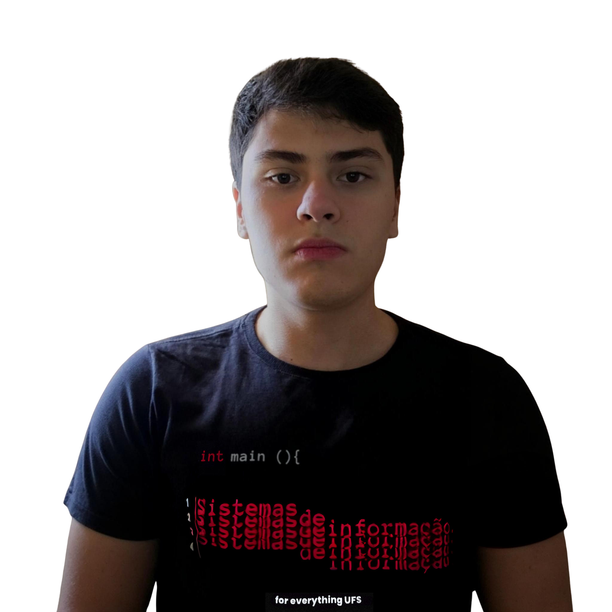

Olá,Meu nome é
Edson Ulisses
sou estudante de Sistemas de Informação na UFS desde 2023. Sempre tive curiosidade em entender como a tecnologia pode resolver problemas do dia a dia, e foi isso que me levou a mergulhar no mundo da programação.
Gosto de aprender coisas novas, encarar desafios e colocar em prática o que estudo, seja em projetos pessoais ou acadêmicos.
Hoje, estou em busca da minha primeira oportunidade profissional, com o objetivo de evoluir como desenvolvedor e seguir minha caminhada para atuar como Full Stack Java.
-